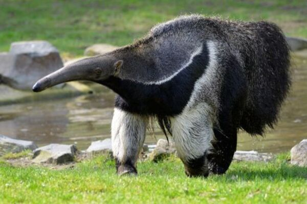

Tamanduá Bandeira (Myrmecophaga tridactyla)
O Tamanduá-Bandeira é um mamífero nativo da América encontrado
em campos e áreas abertas de todos os biomas brasileiros: Amazônia,
Caatinga, Mata Atlântica, Pantanal, Cerrado e Pampa. Além do Brasil, o
Tamanduá-Bandeira também é encontrado na América do Norte e Central.
Ele tem esse nome pois sua cauda tem forma de uma bandeira.
Pertence à classe de mamíferos, ordem Xenarthra e família dos
Myrmecophagidae, sendo seu nome científico Myrmecophaga tridactyla. Pelo
fato de estar extinto em alguns lugares do Brasil, o Tamanduá-Bandeira está
na lista de animais que estão em risco de extinção.
Esses animais possuem uma função muito importante em nosso
ecossistema, pois quando se alimentam de insetos, principalmente formigas,
eles espalham na terra resíduos e nutrientes, deixando-a adubada. Mesmo
sendo um mamífero, ele não possui dentes. Sua boca é pequena, sua língua é
muito grande e possui uma espécie de saliva viscosa e pegajosa que “cola”
seus alimentos.
Os Tamanduás podem ser noturnos ou diurnos, seus hábitos são
baseados no bioma em que habitam. Quando ficam adultos, se tornam
solitários.
Eles não são agressivos nem ágeis, mas, quando se sentem
ameaçados, atacam o predador com suas grandes garras, que também os
ajudam a subir em árvores para fugir de certos predadores.
Seus pêlos são cinzentos ou marrons muito longos pelo corpo e sua
cauda é imensa e peluda, eles também possuem uma faixa preta e branca
que se estende pelo corpo todo.